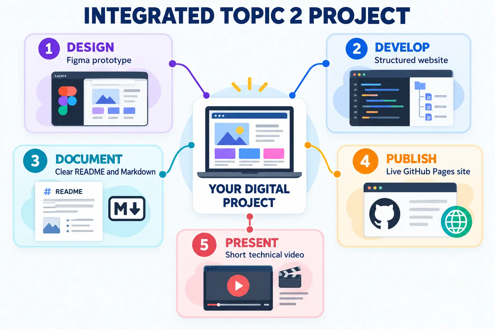
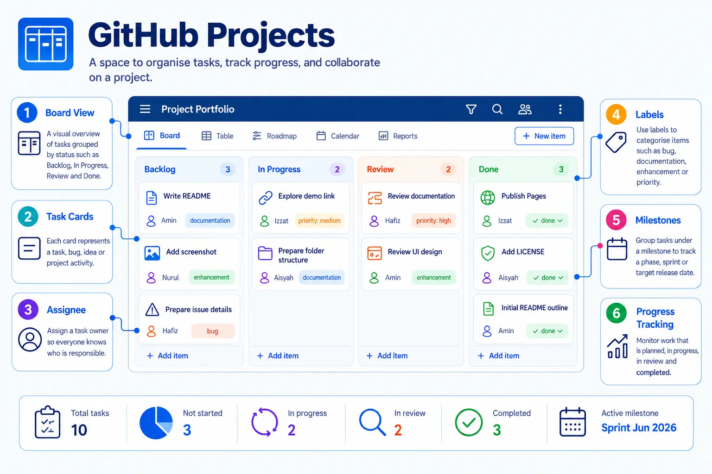
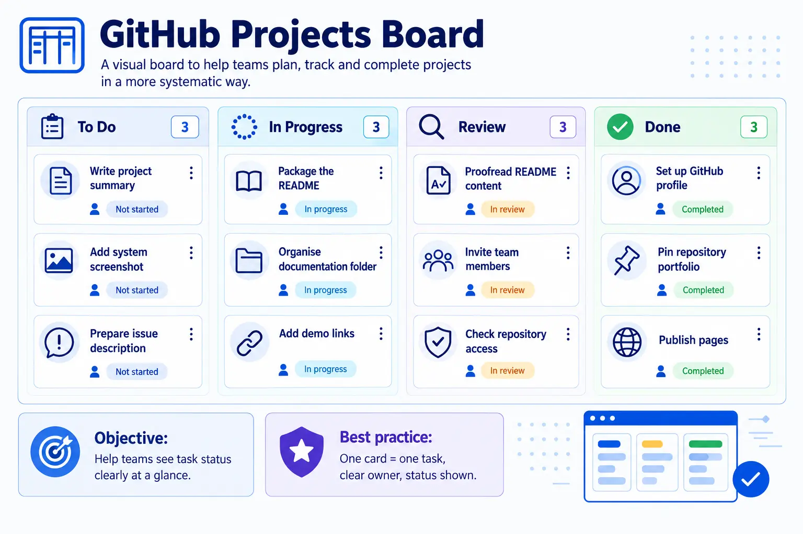
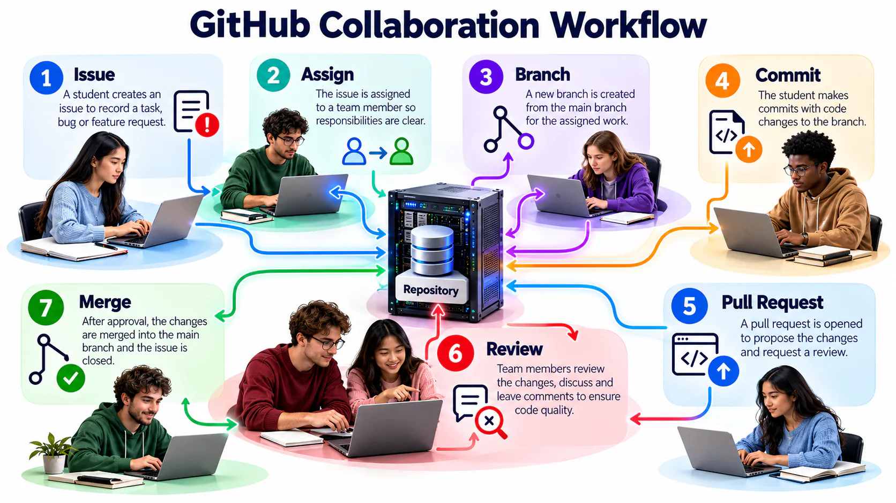
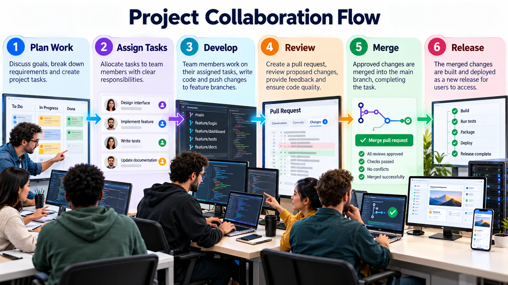
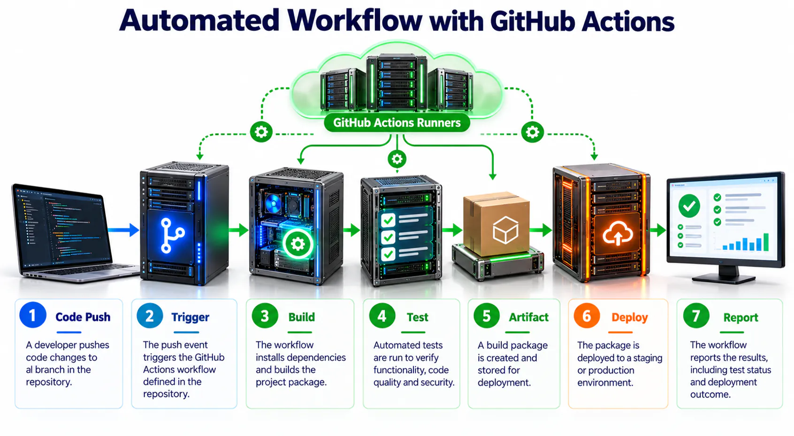

Data Pipeline Monitoring Dashboard
Your team has been asked to propose a simple dashboard for monitoring data collected from several university systems.

Your mission
Produce a coherent digital solution that demonstrates design thinking, technical documentation, web publishing and technical communication.
Complete the challenge
Set up GitHub
Create the repository, complete README, prepare your project folders and record your GitHub Student Developer Pack application status.
Study, plan and analyse
Evaluate professional profile examples, create your developer roadmap and complete the two-organisation GitHub case study.
Generate an initial concept
Use Google Stitch with the supplied framework. Save your final prompt and screenshot.
Design the interface
Refine the dashboard in Figma using frames, components, Auto Layout and a prototype interaction.
Build and publish
Create a simple website, manage it through GitHub Desktop and publish it using GitHub Pages.
Present the journey
Create a 60–90 second Google Vids presentation showing the process and result.
Document everything
Add every link, screenshot and reflection to README.
GitHub foundation pathway
| Part | Practice | Completion evidence |
|---|---|---|
| A1 | Create and verify an account | Professional username and secured account |
| A2 | Follow the lecturer or course profile | Profile appears in the following list |
| A3 | Complete your profile | Name, bio, institution and relevant links |
| B1 | Create the course repository | Public repository with a clear description |
| B2 | Write the project README | Purpose, setup, usage, evidence and reflection |
| B3 | Practise Markdown | Headings, lists, links, images, code, table and checklist |
| B4 | Upload project files | Logical folders and meaningful commit messages |
| B5 | Add images to README | Working relative paths and useful alternative text |
| C1 | Install and sign in to GitHub Desktop | Authenticated desktop application |
| C2 | Clone the repository | Working local copy in a known folder |
| C3 | Edit, commit and push | Local change visible online in commit history |
Plan collaborative work visibly
GitHub Projects can organise Issues and pull requests around outcomes, owners and progress. Begin with a small number of meaningful fields and statuses so the board supports decisions rather than becoming additional administration.

Use a project board consistently
A simple To Do, In Progress, Review and Done workflow is sufficient for the mini project. Every card should have a clear owner and acceptance condition, and its status should be updated as work progresses.

Coordinate the collaboration cycle
Effective collaboration connects discussion, ownership, branches, commits, review and merging. Team members should know where decisions are recorded and who is responsible for the next action.


Introduce automation carefully
GitHub Actions runs a defined workflow when events such as a push or pull request occur. Begin with a simple automated check, understand its trigger and result, and never expose credentials directly in a workflow file.

Team GitHub mini project · four members · about one hour
1 · Repository and access
One member creates the repository, adds a README and invites the other three members as collaborators. Agree on a short project goal and contribution rules.
2 · Issues and ownership
Create at least four Issues. Give each a clear title, description, acceptance condition and assignee.
3 · Project board
Create columns named To Do, In Progress, Review and Done. Add every Issue and move it as work progresses.
4 · Individual contribution
Create an ahli/ folder. Each member adds one Markdown file containing a brief profile, assigned role, completed task and reflection.
5 · Branch and pull request
Complete at least one task on a separate branch. Open a pull request that explains the change and links its Issue.
6 · Peer review and merge
A different member checks the content, provides useful feedback and approves the pull request. Merge only after corrections are complete, then close the linked Issue.
7 · Final README
Update the README with project purpose, team roles, folder guide, progress summary, screenshots or demo, and a short team reflection.
GitHub mini-project evidence
- Four collaborators and four assigned Issues.
- A Project board showing movement across all four stages.
- Four individual Markdown files in
ahli/. - At least one branch, reviewed pull request and merge.
- A complete README and meaningful commit history.
Required evidence
| Tool | Evidence |
|---|---|
| GitHub | Profile, repository, commit history and README |
| GitHub Education | Application status only: Not started, Submitted, Pending or Approved |
| Profile showcase | Improved profile and short reflection |
| Developer roadmap |
topic-02/developer-roadmap.md
|
| GitHub case study |
topic-02/github-case-study.md
|
| GitHub Pages | Published website URL |
| Figma | View-only prototype URL |
| Google Stitch | Final prompt, screenshot and comparison |
| Google Vids | Tested video URL |
Do not submit private documents. Student cards, transcripts, authentication codes and GitHub recovery codes are not coursework evidence.
Quality matters more than decoration. Focus on clear structure, readable content, consistent design and working links.
Three project checkpoints
Repository Foundation
- Repository and folder structure
- README and profile evidence
- Meaningful commit history
Design and Publishing
- Stitch prompt and evaluation
- Figma prototype
- GitHub Pages website
Communication
- Google Vids presentation
- Final README links
- Reflection and verification
Integrated project rubric · 20 marks
| Criterion | Marks |
|---|---|
| Repository structure and version history | 4 |
| README and technical documentation | 4 |
| Figma interface and prototype | 3 |
| Stitch prompt, evaluation and refinement | 3 |
| Published GitHub Pages website | 3 |
| Google Vids technical presentation | 2 |
| Responsible practice and link verification | 1 |